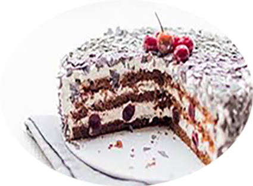

Forêt noire

Pour 8 personnes
Préparation : 30 mn
Cuisson 35 mn
Ingrédients
- 6 oeufs
- 150 g de farine
- 150 g de sucre
- 40 g de cacao
- 75 ml de lait
- griottes au sirop
- 1 c. à café de cannelle
- 1 sachet de levure chimique
- 2 sachets de sucre vanillé
- 50 g de chocolat noir
- 50 cl de crème fraîche liquide
- 50 g de sucre glace
- Kirsch (facultatif)
Recette
- Séparez les blancs des jaunes.
- Fouettez les jaunes et le sucre + le sucre vanillé, ajoutez ensuite le lait
- Ajoutez le cacao en poudre
- Ajoutez la farine et la levure tamisées puis la cannelle
- Battez les blancs en neige bien fermes avec une pointe de sel.
- Incorporez délicatement les blancs à la préparation
- Versez dans un moule beurré et enfournez à 180°C (four préchauffé) pour 35 minutes
- Préparez la chantilly: fouettez la crème bien froide dans un récipient bien froid aussi.
- Ajoutez le sucre glace une fois que la crème a commencé à épaissir.
- Ajoutez de la vanille et du fixe chantilly si vous en avez.
- Faites le montage du gâteau : découpez la génoise en 2 ou en 3 une fois qu'elle a refroidit
- Imbibez du sirop de griottes (ici il est possible de mettre quelques gouttes de Kirsch pour alcooliser le gâteau)
- Étalez une couche de chantilly, dispersez quelques griottes, et recommencez avec les autres couches
- Terminez le gâteau en le recouvrant de chantilly et de copeaux de chocolats.
|